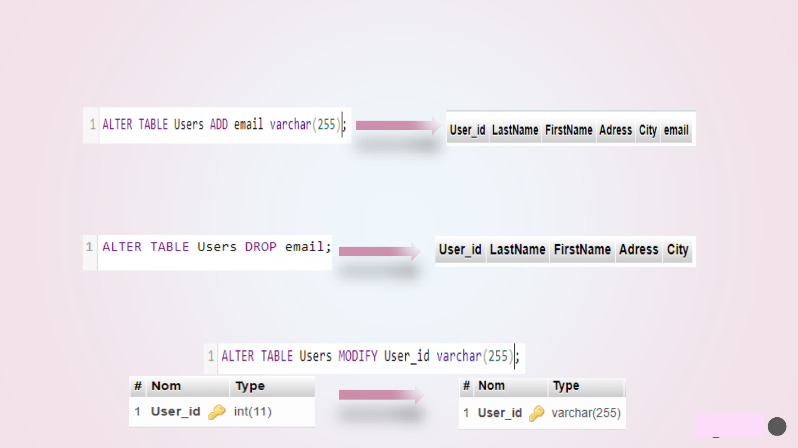
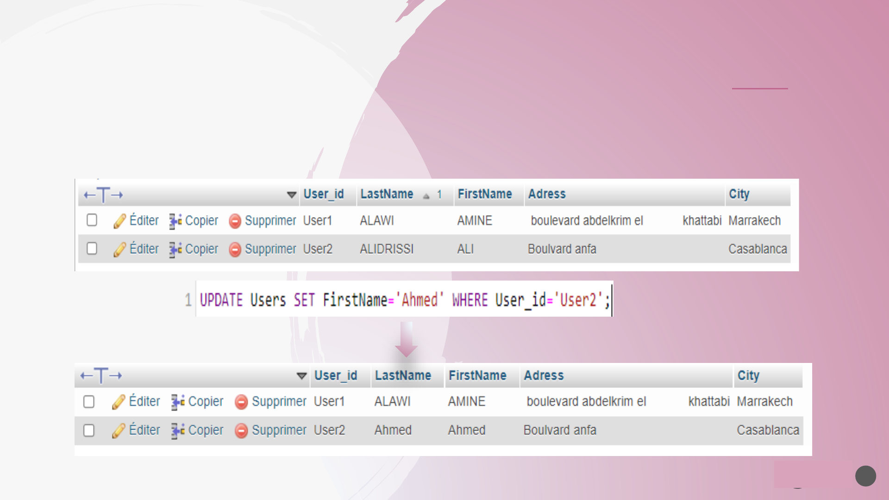
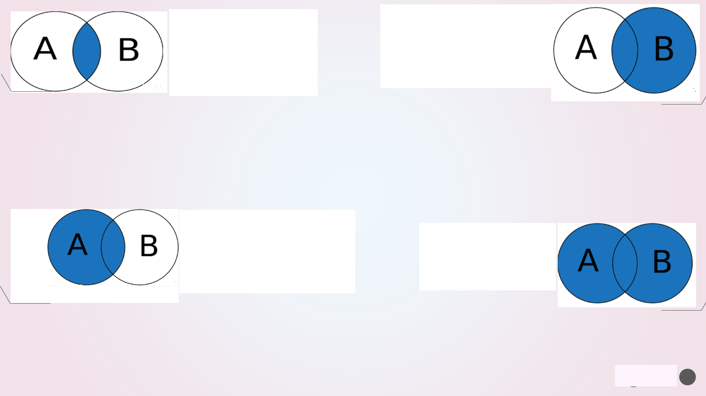

Introduction To
Mysql
A Data Science and Business intelligence
student at fstg
and a member of the sdad club.
REALIZED by:
AMRANI Hasna
aamranihassna48@gmail.com
https://www.linkedin.com/in/hasna-amrani-823bb41ba/
What is MySQL?
Installation of MySQL
MySQL Data Types
MySQL Constraints
MySQL Commands
MySQL JOIN
MySQL Functions
PLAN:
SDAD
3
4
➢ MySQL is a Relational Database
Management System or (RDBMS)
➢ MySQL is developed,
distributed, and supported
by Oracle Corporation
➢ MySQL is one of the most
popular database management
systems originally launched way
back in 1995.
SDAD
Installation of MySQL: PHPMyAdmin, and MySQL Workbench
5
Workbensh
PHPMyAdmin
https://www.educba.com/install-phpmyadmin/
MySQL Workbench is a unified visual tool for database architects, developers, and DBAs.
PhpMyAdmin includes a graphical interface that allows users to easily view the structure
of their databases, tables, and fields.
https://dev.mysql.com/downloads/workbench/
SDAD
6
MySQL DATA
TYPES
➢ MySQL uses many different data types
broken into three categories :
➢ Numeric
➢ Date and Time
➢ String Types
SDAD
7
Numeric Data
Types
INT
− A normal-sized integer that can be signed or unsigned.
TINYINT
− A very small integer that can be signed or unsigned.
SMALLINT
− A small integer that can be signed or unsigned.
MEDIUMINT
− A medium-sized integer that can be signed or unsigned.
BIGINT
− A large integer that can be signed or unsigned.
FLOAT(M,D)
− A floating-point number that cannot be unsigned. You can define the display length (M)
and the number of decimals (D).
DOUBLE(M,D)
− A double precision floating-point number that cannot be unsigned. You can define the
display length (M) and the number of decimals (D).
DECIMAL(M,D)
− An unpacked floating-point number that cannot be unsigned
Date and Time
Data Types
DATE
− A date in YYYY-MM-DD format, between 1000-01-01 and 9999-12-31.
DATETIME
− A date and time combination in YYYY-MM-DD HH:MM:SS format, between 1000-01-01
00:00:00 and 9999
-12-31 23:59:59.
TIMESTAMP
− A timestamp between midnight, January 1
st
, 1970 and sometime in 2037.
TIME
− Stores the time in a HH:MM:SS format.
YEAR(M)
− Stores a year in a 2-digit or a 4-digit format. If the length is specified as 2 (for example
YEAR(2)), YEAR can be between 1970 to 2069 (70 to 69).
SDAD
8
String Types
CHAR(M)
− A fixed-length string between 1 and 255 characters in length (for example CHAR(5)),
right
-
padded with spaces to the specified length when stored. Defining a length is not required, but
the default is 1.
VARCHAR(M)
− A variable-length string between 1 and 255 characters in length. For example,
VARCHAR(25). You must define a length when creating a VARCHAR field.
BLOB or TEXT
− A field with a maximum length of 65535 characters. BLOBs are "Binary Large
Objects" and are used to store large amounts of binary data, such as images or other types of files.
TINYBLOB or TINYTEXT − A BLOB or TEXT column with a maximum length of 255 characters. You do
not specify a length with TINYBLOB or TINYTEXT.
MEDIUMBLOB or MEDIUMTEXT
− A BLOB or TEXT column with a maximum length of 16777215
characters. You do not specify a length with MEDIUMBLOB or MEDIUMTEXT.
LONGBLOB or LONGTEXT
− A BLOB or TEXT column with a maximum length of 4294967295
characters. You do not specify a length with LONGBLOB or LONGTEXT.
ENUM − An enumeration, which is a fancy term for list. When defining an ENUM, you are creating a
list of items from which the value must be selected (or it can be NULL). For example, if you wanted
your field to contain "A" or "B" or "C", you would define your ENUM as ENUM ('A', 'B', 'C')
SDAD
9
MySQL Constraints
As we know that constraint
is a kind of limitation or
restriction. Similarly,
MySQL constraints are used
to define some rules that
limit the data that can go
into a table. With the help
of constraints, we can
basically maintain the
accuracy and integrity of
the data inside the table.
SDAD
Constraints are used to limit the type of data that can go into a table. This ensures the
accuracy and reliability of the data in the table. If there is any violation between the
constraint and the data action, the action is aborted.
Constraints can be column level or table level. Column level constraints apply to a column,
and table level constraints apply to the whole table
Constraints can be specified when the table is created with the CREATE TABLE statement, or
after the table is created with the ALTER TABLE statement.
Followings are some most common MySQL constraints :
➢ NOT NULL : Ensures that a column cannot have a NULL value
➢ UNIQUE :Ensures that all values in a column are different
➢ PRIMARY KEY :Primary Constraint of a relational table, uniquely identifies each record in the table. In
some tables, combination of more than on attributes is declared as primary key.
➢ FOREIGN KEY :Foreign Constraint is a non-key attribute whose value is derived from the primary key of
another table. The relationship between two tables is established with the help of foreign key.
➢ CHECK :Ensures that the values in a column satisfies a specific condition
SDAD
10
11
MySQL Commands
SDAD
SDAD
➢ Create a new SQL database: CREATEDATABASEdatabasename;
➢ Drop an existing SQL database: DROP DATABASE databasename;
➢ create a new table in a database: CREATE TABLE table_name (column1 datatype,
column2 datatype,
....);
➢ Drop an existing table in a database:DROP TABLE table_name;
12

➢ALTER TABLE command is used to add, delete or modify columns in an existing table.
ALTER TABLE command to add a New Column in an existing table:
ALTER TABLE table_name ADD column_name datatype;
ALTER TABLE command to DROP COLUMN in an existing table:
ALTER TABLE table_name DROP column_name;
ALTER TABLE command to change the DATA TYPE of a column in a table:
ALTER TABLE table_name MODIFY column_name datatype;
13
SDAD
The MySQL INSERT INTO statement is used to insert a new record in a table. There are two ways of using
INSERT INTO statement which are mentioned below.
➢ MySQL -INSERT INTO
INSERT INTO table_name (column1, column2, column3, ...) VALUES (value1, value2, value3, ...);
the same in insert user2
SDAD
14
15
➢ MySQL -SELECT Statement
SELECT QUERY is used to fetch the data from the MySQL database. Databases store data for later retrieval.
The purpose of MySQL Select is to return from the database tables, one or more rows that match a given
criteria.
SELECT column1,column2,… FROM table_name;
The Star symbol is used to select all the columns in table
➢ MySQL WHERE Clause
The WHERE clause is used to filter records
SELECT column1, column2...FROM table_name WHERE condition;
SDAD
16
•The AND operator
•displays a record if
•all the
•conditions separated
• by AND
•are TRUE.
•The OR operator
•displays a record if
•any of the conditions
•separated by OR is TRUE.
The NOT operator
displays a record
if the condition(s)
is NOT TRUE.
➢ The MySQL AND, OR and NOT Operators
AND Operator
NOT Operator
OR Operator
SDAD

17
➢ The MySQL ORDER BY Keyword
The MySQL ORDER BY keyword is used to sort the result table in ascending or descending order. By default,
ORDER BY keyword sorts the result in ascending order, however it can be specified using ASC keyword. To sort
the result in descending order, DESC keyword is used.
SELECT column1, column2, column3, ... FROM table_name ORDER BY column1, column2, ... ASC|DESC;
SDAD

The MySQL UPDATE statement is used to modify the existing records in a table. The MySQL WHERE clause can
be used with the UPDATE statement to update the selected rows, otherwise all the rows will be assigned the
updated value.
➢ MySQL UPDATE Statement
UPDATE table_name SET column1 = value1, column2 = value2, ... WHERE condition(s);
SDAD
18
20
MySQL JOIN
A JOIN clause is used
to combine rows from
two or more tables, based
on a related column between
them.
SDAD

21
I
•INNER JOIN: Returns
records that have
matching values in both
tables
•LEFT JOIN: Returns all records
from the left table, and the
matched records from the right
table
•RIGHT JOIN: Returns all
records from the right table,
and the matched records from
the left table
•CROSS JOIN: Returns
all records from both
tables
SELECT column_name(s)
FROM tableA
INNER JOIN tableB
ON tableA.column_name = tableB.column_name;
SELECT column_name(s)
FROM tableA
LEFT JOIN tableB
ON tableA.column_name = tableB.column_nam
SELECT column_name(s)
FROM tableA
RIGHT JOIN tableB
ON tableA.column_name = tableB.column_name;
SELECT column_name(s)
FROM tableA
CROSS JOIN tableB;
SDAD
22
MySQL Functions
SDAD
MySQL has many built-in
functions.
This reference contains
string, numeric, date, and
some advanced functions in
MySQL.

➢ MySQL Aggregate Functions
An aggregate function performs a calculation on multiple values and returns a single value.
Before we move on to the implementation of the functions, it is important to understand what aggregate
functions are. Aggregate Functions perform operations on multiple values of a column and return a single
value. Examples of Aggregate functions are MIN(), MAX(), SUM(), COUNT(), AVG(), etc.
1
function_name
(column)
The generic syntax of aggregate functions is as follows:
Name
Description
AVG()
Return the average value of the argument
COUNT()
Return a count of the number of rows returned
COUNT(DISTINCT)
Return the count of a number of different values
GROUP_CONCAT()
Return a
concatenated string
JSON_ARRAYAGG()
Return result set as a single JSON array
JSON_OBJECTAGG()
Return result set as a single JSON object
MAX()
Return the maximum value
MIN()
Return the minimum value
STDDEV_POP()
Return the population standard deviation
SUM()
Return the
sum
VARIANCE()
Return the population standard variance
SDAD
23
➢ MySQL Comparison Functions
Name
Description
>
Greater than operator
>=
Greater than or equal operator
<
Less than operator
<>,
!=
Not equal operator
<=
Less than or equal operator
<=>
NULL
-safe equal to operator
=
Equal operator
BETWEEN ... AND ...
Whether a value is within a range of values
IN()
Whether a value is within a set of values
IS NOT
Test a value against a
boolean
IS NOT NULL
NOT NULL value test
IS NULL
NULL value test
ISNULL()
Test whether the argument is NULL
LIKE
Simple pattern
matching
NOT BETWEEN ... AND ...
Whether a value is not within a range of values
NOT IN()
Whether a value is not within a set of values
NOT LIKE
Negation of simple pattern matching
STRCMP()
Compare
two strings
24
SDAD
DATEDIFF()
Return the number of days between two date values:
EXAMPLE:SELECT
DATEDIFF("2017-06-25", "2017-06-15");
DATE_ADD()
The DATE_ADD() function adds a time/date interval to a date and then returns the
date.
EXAMPLE: Add 15 minutes to a date and return the date:
SELECT DATE_ADD("2017-06-15 09:34:21", INTERVAL 15 MINUTE);
DATE_FORMAT
()
The DATE_FORMAT() function formats a date as specified.
DATE_FORMAT(
date, format)
EXAMPLE:
Format a date:
SELECT DATE_FORMAT("2017-06-15", "%M %d %Y");
Extract
()
The EXTRACT() function extracts a part from a given date.
EXTRACT(
part FROM date)
EXAMPLE:
SELECT EXTRACT(YEAR FROM "2017-06-15”)
SYSDATE()
The SYSDATE() function returns the current date and time.
EXAMPLE: SELECT SYSDATE();
➢ MySQL DATE functions
25
SDAD